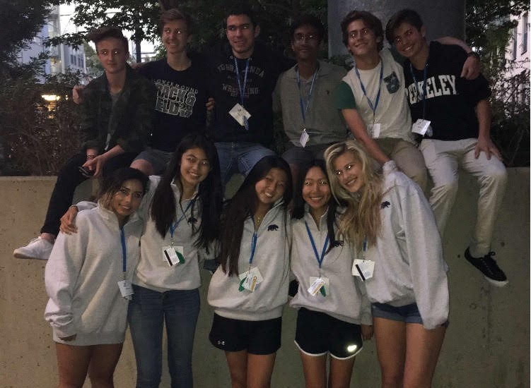
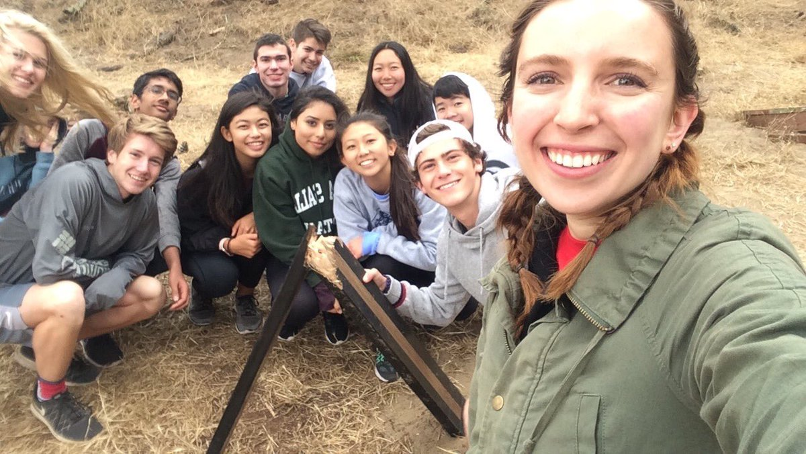
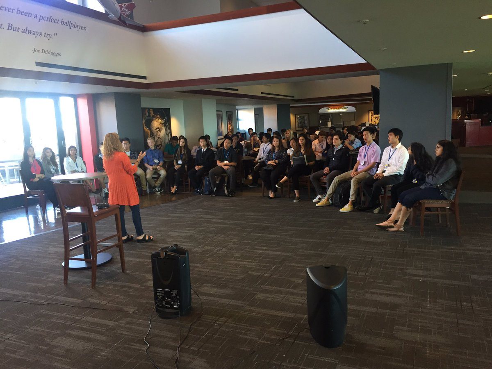
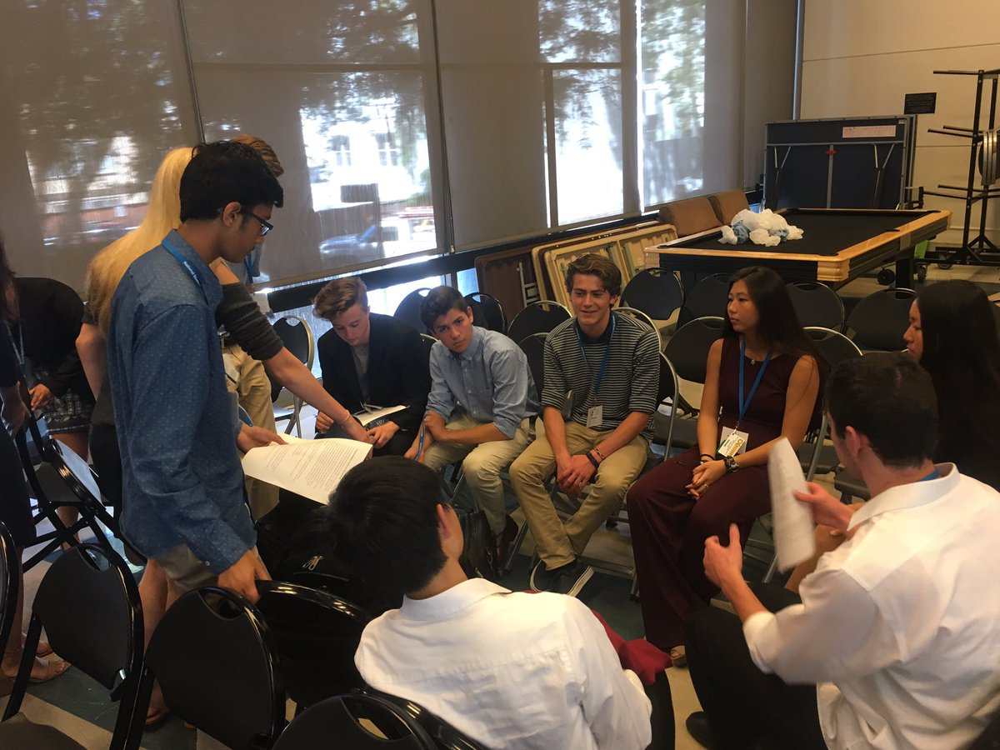
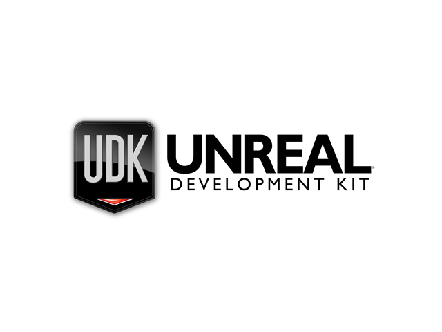
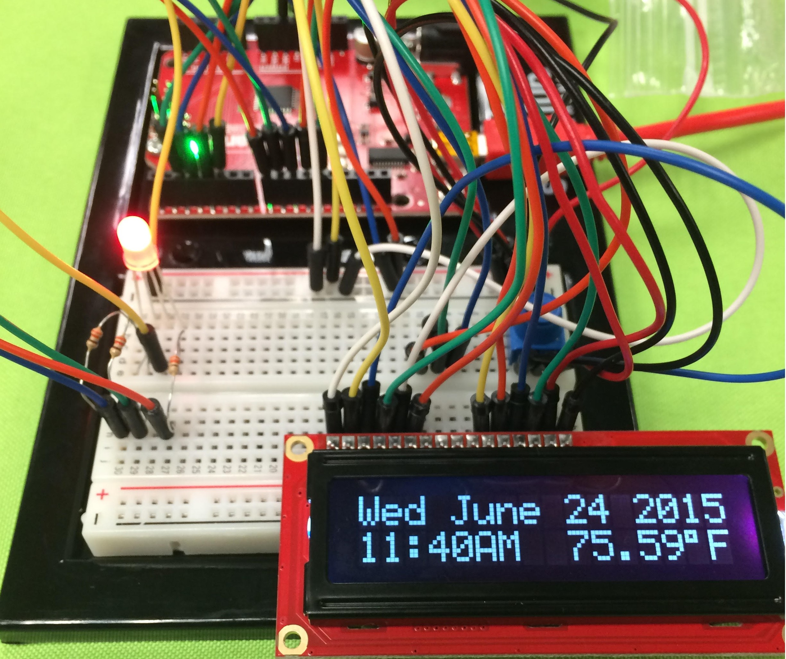
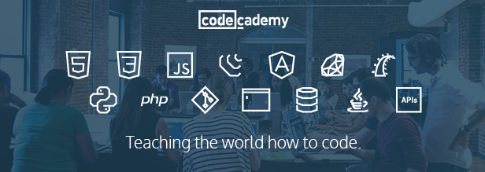
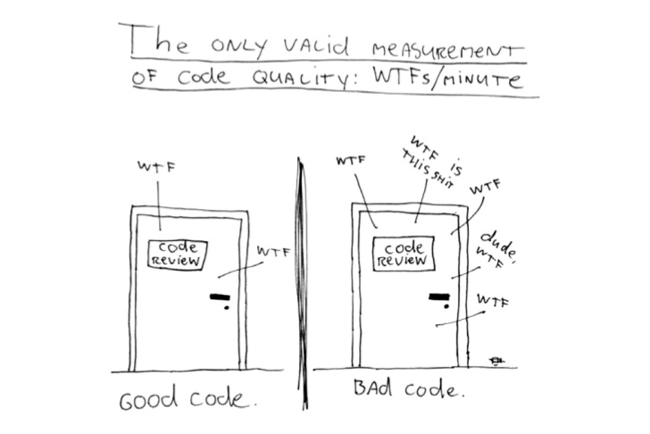

Overview
Currently I am a senior enrolled at Yorba Linda High School where I plan to stay through senior year. While I haven't been super active at school the activities I have done I have all enjoyed. From participating in Key Club, being in a Physics Debate Club, and going on a trip to study business and entrepreneurship in UC Berkley. All the expeciences I have had that were results from going to YLHS have been good ones. While I don't stress myself taking all AP classes I take what I feel will help me the most; and I have excelled in them with classes like AP Physics and AP Computer Science. I plan to stay on track with that in AP Calculus and AP Physics 2 next year aswell; all the while still having the time and energy to be able to teach myself or learn new skills outside of school, play sports, and persue personal projects in my free time. In terms of college I think it should be obvious I will get a degree in Software Engineering or Computer Science, so colleges with advantageous programs in those areas are top of my list. While still being resonable with my grades and test scrose I have on my college list, University of California, Irvine; University of Texas, Dallas; and The Oregon Institue of Technology. If I could choose any college it would be The California Institute of Technology, however with their demographics and the extremely high level of students I feel it's very unlikely. But I will be happy with whichever college I end up going to and I look forward to starting my college experience.
Trips & Camps
University Of California, Berkeley (NSLC)
During the summer of 2017 I took a trip to UC Berkly as part of the National Student Leadership Confrence (NSLC). By far it has been one of the busiest and most fun things I have done. While I went there to learn about business and entrepreneurship, I found that the leadership skills and team building activites we're much more enlightening. While we had many amazing guest speakers, activites, and lessons on Business, and not so much entrepreneurship; the really stunning part of this were the teambuilding and leadership activites. As a person who typically is the one doing all the work in group projects, this gave situations where that was impossible, and it forced me to learn to work with others. Whether it was having to rely on the kid who never took things seriously, or relying on the other kid who wasn't the brightest but still tried, we had to practice skills to make things work and guide our teams we were put into. Although I don't look back at the notes I took form the lectures on business. I am always thinking about the lessons I learned there in dealing with people in a professional enviornment. If I have any regrets about the trip, it would be that I didn't enroll in the health and medicine course; they got the same leadership and team building excercises as us, and they got to work in UC-Berkely's labs, and the guy to girl ratio was like 1:10.

This was a group picture we took on our second to last day at Berkely. It was right in the middle of all the buildings we frequently used and stayed in. They are some of the best people I know, I have nothing but good things to say about them. Even though we argued and fought at times they were all great. Far better than my roomates. Although even they were better than the campus itself. The beds were thin and rock hard (supposedly "enviornmentally friendly") and the showers all had locks preventing water pressure. No one even thought about washing their hair. But hey it just brought us closer. We all had to suffer through the crappy conditions. Although even with the beds the program ran us so hard sleeping wasn't that difficult.

Even when we weren't working hard, we were playing hard. At one point we went to here, a tree ropes course. Even though it was mostly fun some of the activites we did involed us getting more lessons about teamwork. Overall it was really fun, and we even got to break part of the course; that wasn't planned though. The person taking the picture was our group's "instructor" Ellie. The only reason I say "instructor" is because our instructors were really not much older than us; and, ours especially like to join in on whatever mischeif we had going on. However they did a good job at what they needed to do, except for keeping us in when we snuck out to explore Berkely at night.

Apart from trips where we climbed around trees together we also visited places like the AT&T stadium and learned of the business innerworkings. It was also really fun to get a tour around with no one in it. We also learned a bit about the history of the area too.

Although this is the last picture, it's from pretty early in the trip. Even though it may look like we're sitting in a circle just talking (and that kind of is what we're doing) it was the best experience. Most of the time we had an office, this was one of the occasions we didn't. What we are doing is running a simulation for a business. The program gave us falling down businesses to try and fix, while our instructors watched and gave us new issues to solve (ie having product defects, sueing customers etc.) Along with this we also we're allowed to come up with product pitches, and in a shark tank like style, pitch them. This involed finding ways to ship our product, finding a customer base for our product, finding a supplier, and creating social media accounts to advertise.
Georgia Tech (NYLF)
I haven't gone on this trip yet but I am looking forward to it. I've heard only good things about the NYLF, and my brother attended another one of their programs. Based off of his description, it should be alot more like my experience at UC-Berkeley than my experience at UCI. For now I'm just showing the video that got me hooked on the program to begin with.
University of California, Irvine (ID Tech)
At UCI I praticipated in two ID tech camps a few summers ago. The programs were in Game Design using UDK, and Robotics using an arduino. I felt very underwhelmed with both programs. I considered taking the course on coding with java. But having taken AP Computer Science, having taught myself much more than that online, and looking over the shoulder of people who were taking that course, I feel it would be underwhelming aswell. It's a shame since I was a little intrested in their "intense" as they called it 4 week course covering more in depth programming topics. But it requires having attended ID Tech camps for 3 weeks at least. I don't feel it's worth the time or money to take another ID Tech course. Not to say they were bad, but compared to the NSLC, the camp is made for 10 year olds who have never seen anything like a raspberry pi or the free Unity tutorials before. The camp was also only from 9 to about 1, unlike the NSLC which was 7-8 to 9-10 every day; and it was much less intense while we worked. There was little to no teambuilding as well, if I had wanted I could have done the whole thing without talking to anyone.

I didn't even bother putting up a picture of the "game" I created from the UDK course because it was so simple. We learned the basic mechanics of UDK and then using the already supplied assests made maps. It was almost all drag and drop. I've found much more in depth and efficient ways to learn game design with the free tutorials unity promotes on their website.

A little more impressive than the UDK course was the arduino course offered. Although I don't credit anything to ID tech as they basically gave us the SIK guide to the SparkFun Inventor's kit that's $99.99 on amazon, and then they rewrote the instructions in the book on a website with their tag on it and said it's a class. While the instructors were good with helping the few kids who couldn't follow the instructions that held our hands through the course, anyone else could have helped those kids. What I found impressive was that there were no real project checks, so I had the time to explore the web and find out what arduinos could do beyond the little course they gave us that hardly explained the code we copy and pasted for the majority of the course. I became pretty good friends with the kid who sat next to me, and although the picture to the right shows a very simple display, we made some pretty cool things with those arduinos in the little time we had including pong and snake using multiple of the little displays that came in the kit.
Self Taught Things & Skills Learned Online

First and foremost, the thing that I would say has helped me the most in learning what I want, and also doing a good job of having me retain it, is Codecademy. To be more specific their Codecademy Pro Intensive programs. When I had first started to teach myself code I went to FreeCodeCamp. However, they did a very poor job of things, especially compared to Codecademy. I did enough work on their website that they said I had done 300 hours worth of learning. But there we're no projects, application, or real ways to retain anything I had learned. A lot of things were poorly explained to. But it gave me a start. After I decided that I wasn't remembering anything from FreeCodeCamp I looked at coding bootcamps, however I quickly realized that I would not be able to afford anything, or even get to the locations. Eventually I stumbled upon Codecademy, after doing their free courses I decided why not try one of their paid courses? They were insanely cheaper than anything else I could find. So to start I gave the "Build Websites From Scratch" course out; and, I was astounded. Not only was the course itself very thorough, we had a slack group of other students, and instructors to help us along the way. Throughout the course we had others read our code on projects we had made to suggest things to work on. Not only have the concepts I learned there stuck with me, but they set up their students to go and learn more, giving them outside resources and suggestions of places to go from the end of their course. I plan on taking more of their intensive courses soon, however, right now I'm going to try and solidify the skills I've learned thus far. This website, for example, is some of my practice.

Although I ragged on FreeCodeCamp, I cannot deny that they were my real start. And for a non for profit, they do very well. I also accredit them with showing me medium, a news outlet that provides me with tons of ideas. I definitly would not say that they're a one stop shop for learning everything to be a full stack web developer, but they make a valiant effort. Also, I never took advantage of their fourms, I'm sure someone more socially confident would find great help from their community there. In a nutshell, I would guide people to Codecademy instead of FreeCodeCamp, but they are still a good resource.
